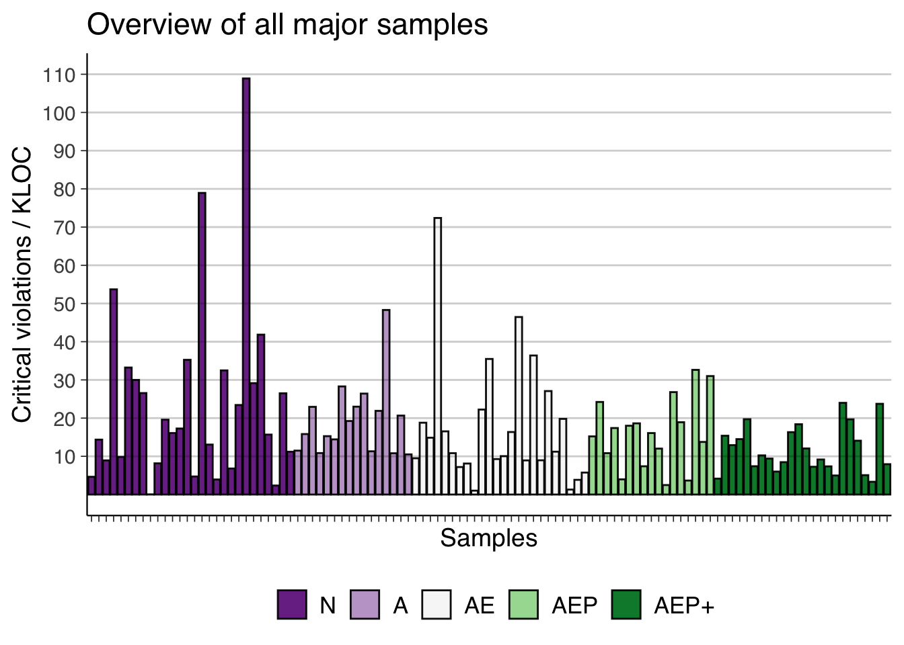
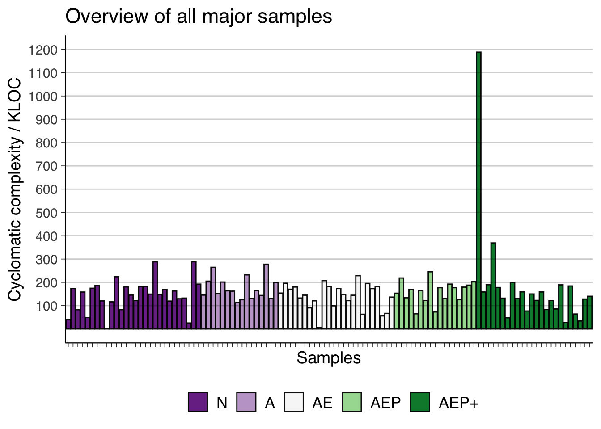
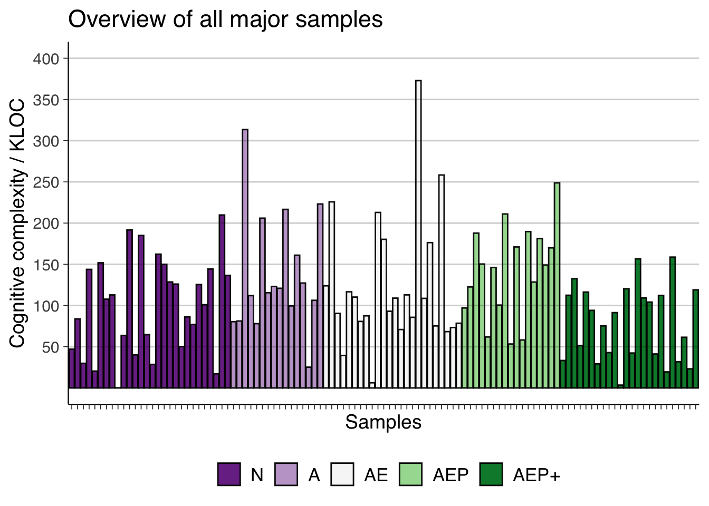
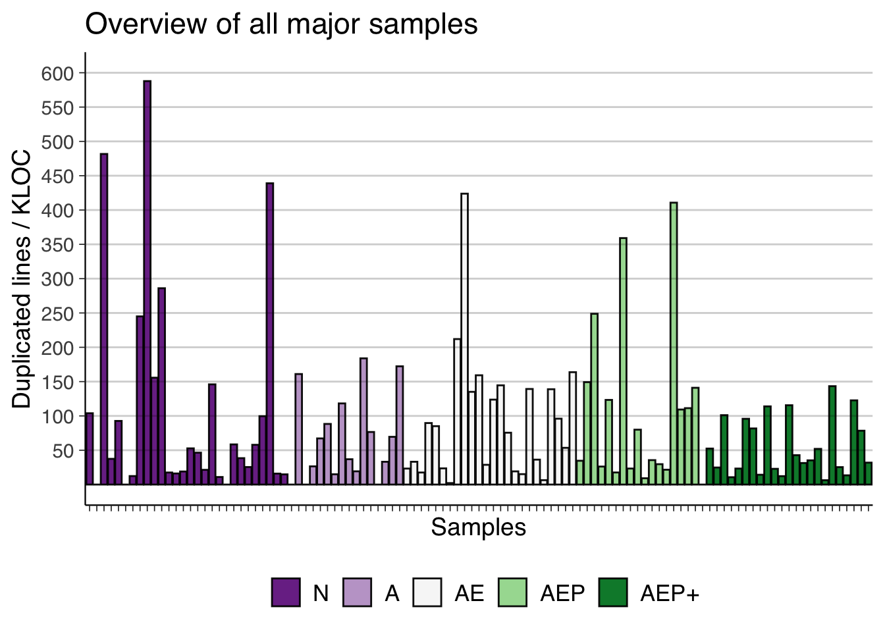

We assign indices to each of the warning categories as follows. The “major” categories are categories with more rigorous sample sizes, so their analysis results are more reliable. Subsequent analysis steps focus on these major categories.
NAAEAPAEPAE+AEP+AP+E+A+Ecategory_labels <- c("1"="N",
"2"="A",
"3"="AE",
"4"="AP",
"5"="AEP",
"6"="AE+",
"7"="AEP+",
"8"="AP+",
"9"="E+",
"10"="A+",
"11"="E")
# A data frame that only includes samples from the major categories
df_major = df[df$category %in% major_categories, ]
df_major$age <- get_age(df_major$created_at)Now we plot the amount of samples in each category in a bar chart.
# Used to dictate the patters used for the bars in each category
category_patterns <- c(
"N"="none",
"A"="stripe",
"AE"="none",
"AP"="stripe",
"AEP"="none",
"AE+"="stripe",
"AEP+"="none",
"AP+"="stripe",
"E+"="none",
"A+"="stripe",
"E"="none"
)
# Colors assigned to each category
category_colors <- c(
"1"="#40004b",
"2"="#762a83",
"3"="#9970ab",
"4"="#c2a5cf",
"5"="#e7d4e8",
"6"="#f7f7f7",
"7"="#d9f0d3",
"8"="#a6dba0",
"9"="#5aae61",
"10"="#1b7837",
"11"="#00441b"
)
ggplot(df, aes(x=category, fill=factor(category))) +
theme_default(base_family="sans", base_size=14) +
theme(legend.position="bottom") +
guides(fill=guide_legend(title=NULL,
override.aes=list(
pattern=category_patterns
))) +
geom_bar_pattern(color="#000000F0",
linewidth=0.5,
position=position_dodge(preserve="single"),
pattern_fill="black",
pattern_angle=45,
pattern_density=0.1,
pattern_spacing=0.025,
pattern_key_scale_factor=0.6,
pattern=category_patterns) +
scale_x_discrete(labels=NULL) +
scale_fill_manual(labels=category_labels, values=category_colors) +
labs(title="Distribution of samples", x="", y="Count") +
geom_hline(yintercept=1:6 * 5, alpha=0.2) +
scale_y_continuous(breaks=1:6 * 5)plot_barplot <- function(data, x, y) {
ggplot(data,
aes(x=x,
y=y,
fill=factor(category))) +
theme_default(base_family="sans", base_size=14) +
theme(legend.position="bottom") +
guides(fill=guide_legend(title=NULL)) +
geom_col(color="#000000F0", linewidth=0.5) +
scale_x_discrete(labels=NULL) +
scale_fill_manual(labels=c("1"="N",
"2"="A",
"3"="AE",
"5"="AEP",
"7"="AEP+"),
values=c("1"="#7b3294",
"2"="#c2a5cf",
"3"="#f7f7f7",
"5"="#a6dba0",
"7"="#008837"))
}
major_samples_barplot <- function(data, metric) {
plot_barplot(data, reorder(data$name, data$category), metric)
}
major_category_summary_barplot <- function(data, metric) {
plot_barplot(data, data$category, metric)
}loc_per_category <- aggregate(loc ~ category, df_major, mean)
loc_per_category$category <- factor(loc_per_category$category)
major_category_summary_barplot(loc_per_category, loc_per_category$loc) +
labs(title="Mean LOC per major category", x="Categories", y="LOC") +
geom_hline(yintercept=1:9 * 20000, alpha=0.2) +
scale_y_continuous(breaks=1:9 * 20000)stars_per_category <- aggregate(stars ~ category, df_major, mean)
stars_per_category$category <- factor(stars_per_category$category)
major_category_summary_barplot(stars_per_category, stars_per_category$stars) +
labs(title="Mean stargazers per major category", x="Categories", y="Stargazers") +
geom_hline(yintercept=1:6 * 1000, alpha=0.2) +
scale_y_continuous(breaks=1:6 * 1000)age_per_category <- aggregate(age ~ category, df_major, mean)
age_per_category$category <- factor(age_per_category$category)
major_category_summary_barplot(age_per_category, age_per_category$age) +
labs(title="Mean project age per major category", x="Categories", y="Age (days)") +
geom_hline(yintercept=1:6 * 500, alpha=0.2) +
scale_y_continuous(breaks=1:6 * 500)major_samples_barplot(df_major, df_major$bugs_kloc) +
labs(title="Overview of all major samples", x="Samples", y="Bugs / KLOC") +
geom_hline(yintercept=1:18 / 2, alpha=0.2) +
scale_y_continuous(breaks=1:18 / 2)major_samples_barplot(df_major, df_major$code_smells_kloc) +
labs(title="Overview of all major samples", x="Samples", y="Code smells / KLOC") +
geom_hline(yintercept=50 * 1:13, alpha=0.2) +
scale_y_continuous(breaks=50 * 1:13)major_samples_barplot(df_major, df_major$critical_violations_kloc) +
labs(title="Overview of all major samples", x="Samples", y="Critical violations / KLOC") +
geom_hline(yintercept=10 * 1:11, alpha=0.2) +
scale_y_continuous(breaks=10 * 1:11)
major_samples_barplot(df_major, df_major$major_violations_kloc) +
labs(title="Overview of all major samples", x="Samples", y="Major violations / KLOC") +
geom_hline(yintercept=50 * 1:12, alpha=0.2) +
scale_y_continuous(breaks=50 * 1:12)major_samples_barplot(df_major, df_major$minor_violations_kloc) +
labs(title="Overview of all major samples", x="Samples", y="Minor violations / KLOC") +
geom_hline(yintercept=10 * 1:10, alpha=0.2) +
scale_y_continuous(breaks=10 * 1:10)major_samples_barplot(df_major, df_major$security_hotspots_kloc) +
labs(title="Overview of all major samples", x="Samples", y="Security hotspots / KLOC") +
geom_hline(yintercept=1:11 / 2, alpha=0.2) +
scale_y_continuous(breaks=1:11 / 2)major_samples_barplot(df_major, df_major$vulnerabilities_kloc) +
labs(title="Overview of all major samples", x="Samples", y="Vulnerabilities / KLOC") +
geom_hline(yintercept=1:6 / 20, alpha=0.2) +
scale_y_continuous(breaks=1:6 / 20)major_samples_barplot(df_major, df_major$cyclomatic_complexity_kloc) +
labs(title="Overview of all major samples", x="Samples", y="Cyclomatic complexity / KLOC") +
geom_hline(yintercept=1:12 * 100, alpha=0.2) +
scale_y_continuous(breaks=1:12 * 100)
major_samples_barplot(df_major, df_major$cognitive_complexity_kloc) +
labs(title="Overview of all major samples", x="Samples", y="Cognitive complexity / KLOC") +
geom_hline(yintercept=1:8 * 50, alpha=0.2) +
scale_y_continuous(breaks=1:8 * 50)
major_samples_barplot(df_major, df_major$duplicated_lines_kloc) +
labs(title="Overview of all major samples", x="Samples", y="Duplicated lines / KLOC") +
geom_hline(yintercept=1:12 * 50, alpha=0.2) +
scale_y_continuous(breaks=1:12 * 50)
major_samples_barplot(df_major, df_major$sqale_debt_ratio) +
labs(title="Overview of all major samples", x="Samples", y="Technical debt ratio") +
geom_hline(yintercept=1:5 * 2, alpha=0.2) +
scale_y_continuous(breaks=1:5 * 2)Albin Johansson and Carl Holmberg, Chalmers University of Technology, 2023